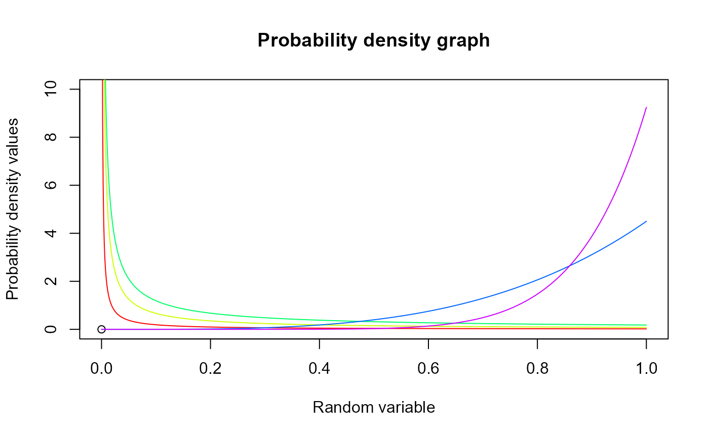

These functions provide the ability for generating probability density values, cumulative probability density values and moment about zero values for the Generalized Beta Type-1 Distribution bounded between [0,1].
Arguments
- p
vector of probabilities.
- a
single value for shape parameter alpha representing as a.
- b
single value for shape parameter beta representing as b.
- c
single value for shape parameter gamma representing as c.
Details
The probability density function and cumulative density function of a unit bounded Generalized Beta Type-1 Distribution with random variable P are given by
$$g_{P}(p)= \frac{c}{B(a,b)} p^{ac-1} (1-p^c)^{b-1} $$; \(0 \le p \le 1\) $$G_{P}(p)= \frac{p^{ac}}{aB(a,b)} 2F1(a,1-b;p^c;a+1) $$ \(0 \le p \le 1\) $$a,b,c > 0$$
The mean and the variance are denoted by $$E[P]= \frac{B(a+b,\frac{1}{c})}{B(a,\frac{1}{c})} $$ $$var[P]= \frac{B(a+b,\frac{2}{c})}{B(a,\frac{2}{c})}-(\frac{B(a+b,\frac{1}{c})}{B(a,\frac{1}{c})})^2 $$
The moments about zero is denoted as $$E[P^r]= \frac{B(a+b,\frac{r}{c})}{B(a,\frac{r}{c})} $$ \(r = 1,2,3,....\)
Defined as \(B(a,b)\) is Beta function. Defined as \(2F1(a,b;c;d)\) is Gaussian Hypergeometric function.
NOTE : If input parameters are not in given domain conditions necessary error messages will be provided to go further.
References
Manoj C, Wijekoon P, Yapa RD (2013). “The McDonald generalized beta-binomial distribution: A new binomial mixture distribution and simulation based comparison with its nested distributions in handling overdispersion.” International journal of statistics and probability, 2(2), 24. Janiffer NM, Islam A, Luke O, others (2014). “Estimating Equations for Estimation of Mcdonald Generalized Beta—Binomial Parameters.” Open Journal of Statistics, 4(09), 702. Roozegar R, Tahmasebi S, Jafari AA (2017). “The McDonald Gompertz distribution: properties and applications.” Communications in Statistics-Simulation and Computation, 46(5), 3341--3355.
Examples
#plotting the random variables and probability values
col <- rainbow(5)
a <- c(.1,.2,.3,1.5,2.15)
plot(0,0,main="Probability density graph",xlab="Random variable",ylab="Probability density values",
xlim = c(0,1),ylim = c(0,10))
for (i in 1:5)
{
lines(seq(0,1,by=0.001),dGBeta1(seq(0,1,by=0.001),a[i],1,2*a[i])$pdf,col = col[i])
}

dGBeta1(seq(0,1,by=0.01),2,3,1)$pdf #extracting the pdf values
#> [1] 0.000000 0.117612 0.230496 0.338724 0.442368 0.541500 0.636192 0.726516
#> [9] 0.812544 0.894348 0.972000 1.045572 1.115136 1.180764 1.242528 1.300500
#> [17] 1.354752 1.405356 1.452384 1.495908 1.536000 1.572732 1.606176 1.636404
#> [25] 1.663488 1.687500 1.708512 1.726596 1.741824 1.754268 1.764000 1.771092
#> [33] 1.775616 1.777644 1.777248 1.774500 1.769472 1.762236 1.752864 1.741428
#> [41] 1.728000 1.712652 1.695456 1.676484 1.655808 1.633500 1.609632 1.584276
#> [49] 1.557504 1.529388 1.500000 1.469412 1.437696 1.404924 1.371168 1.336500
#> [57] 1.300992 1.264716 1.227744 1.190148 1.152000 1.113372 1.074336 1.034964
#> [65] 0.995328 0.955500 0.915552 0.875556 0.835584 0.795708 0.756000 0.716532
#> [73] 0.677376 0.638604 0.600288 0.562500 0.525312 0.488796 0.453024 0.418068
#> [81] 0.384000 0.350892 0.318816 0.287844 0.258048 0.229500 0.202272 0.176436
#> [89] 0.152064 0.129228 0.108000 0.088452 0.070656 0.054684 0.040608 0.028500
#> [97] 0.018432 0.010476 0.004704 0.001188 0.000000
dGBeta1(seq(0,1,by=0.01),2,3,1)$mean #extracting the mean
#> [1] 0.4
dGBeta1(seq(0,1,by=0.01),2,3,1)$var #extracting the variance
#> [1] 0.04
pGBeta1(0.04,2,3,4) #acquiring the cdf values for a=2,b=3,c=4
#> [1] 0.0006451179
mazGBeta1(1.4,3,2,2) #acquiring the moment about zero values
#> [1] 0.7619048
mazGBeta1(2,3,2,2)-mazGBeta1(1,3,2,2)^2 #acquiring the variance for a=3,b=2,c=2
#> [1] 0.01950113
#only the integer value of moments is taken here because moments cannot be decimal
mazGBeta1(3.2,3,2,2)
#> [1] 0.4848485